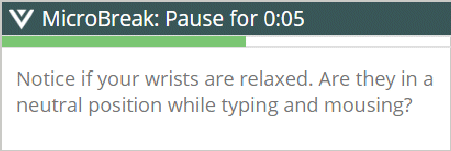

|

This awareness can help you change your work patterns throughout the day, instead of just noticing how you feel at the end of the day.
The ForgetMeNot window pops up at an interval you select (for example, every 15 minutes). Because taking brief breaks, in addition to longer breaks, has been shown to be beneficial, the ForgetMeNots also give you the option of including suggested short (for example, 12 seconds) microbreaks whenever a ForgetMeNot reminder message appears.
View Detailed ForgetMeNot User Documentation